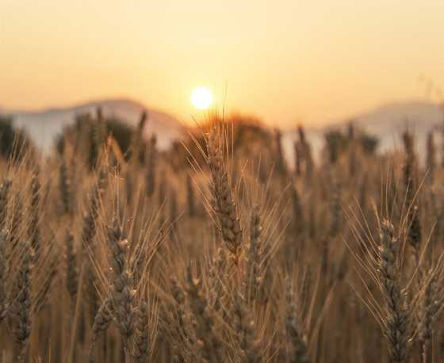
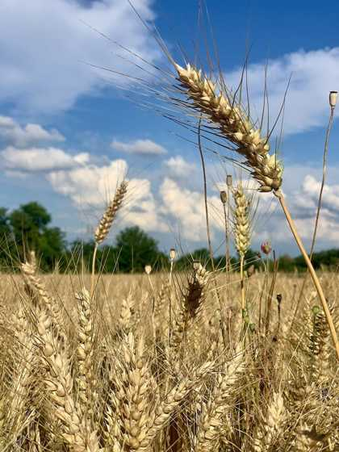
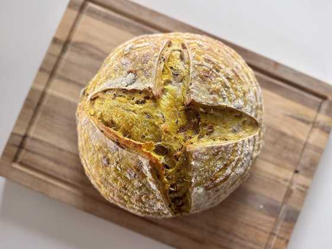

山形県飯豊町・小白川
山あいの暮らしの一角で、
焼きたてのパンと、ゆっくりの時間を。
天然酵母と国産小麦のパンを焼く、小さなパン屋「ぱんや」。自宅の一角から始まったお店が、いまはカフェとデリも楽しめる場所になりました。
ABOUT
お店の由来と想い
- 店主さんは東京から飯豊町へ移住された方で、町の魅力に惹かれて開業されたそうです。
- はじまりは、ご自宅の一角をDIYして作った小さなパン屋です。目印の小さな看板は、長井市のサンドブラスト工房で作られたものと紹介されています。
- 2026年4月10日にリニューアルし、カフェ利用とデリのテイクアウトが始まりました。
- カフェの空間は店主さんがひとつずつ手作りしたセルフリノベーション。思い出の家具や大切な人とのつながりが形になっているそうです。
- パンには天然酵母、国産小麦、素焚糖、国産塩を使っています。
店名「ぱんや」の由来は、確認できる資料がありませんでした。「その名のとおりのパン屋さん」と受け取れる、というのは制作側のイメージです。




MENU
パンと、ランチと、デリ
パン
取材記事で紹介されていた品です。ラインナップは日によって変わる場合があります。
- 明太マヨバターベーグル
- あんこベーグル
- ベーコンエピ
- クリームパン
- 食パン
- バゲット
お取り置きもできると紹介されています。詳しくはInstagramでご確認ください。
ランチ(金・土・日)
メインは週替わり。パンの盛り合わせ(3種)、ミニサラダ、選べるデリが付くと紹介されています。
デリ
店内で楽しめるほか、テイクアウトもできます。素材の味を活かした手仕事のお惣菜です。
| 営業時間 | 準備中 |
|---|---|
| 定休日 | 準備中 |
| 価格 | 準備中 |
| 電話 | 準備中 |
営業日・時間は情報源によって異なります。最新の情報は公式Instagramでご確認ください。


VOICE
口コミ
イメージ例 以下は制作側が作った例で、実際のお客様の声ではありません。
山のほうまで足を延ばした甲斐のある、やさしい味のパンでした。
店内がゆったりしていて、ランチの時間がのんびり過ごせました。
もちもちのベーグルを持ち帰って、翌朝も楽しみました。


